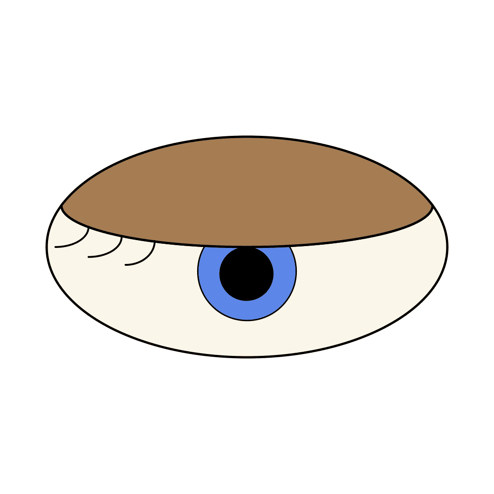

What is a Gif?
GIF stands for Graphics Interchange Format. GIF is a raster file format
designed for relatively basic images that appear mainly on the internet. Each file can
support up to 8 bits per pixel and can contain 256 indexed colors. GIF files also allow
images or frames to be combined, creating basic animations.
from Adobe.com

Basically it's a simple animation that often loops.
The Illustrator to Photoshop to Gif Pipeline
To make an animated gif, we will be using both Adobe Illustrator and Photoshop. The process is as follows:
In Illustrator
- Open your eye illustration
- Make sure the eyelid is on a separate layer from the rest of the image.
- Go to file > export > export as
- change the format to Photoshop (psd)
- Export
In Photoshop
- Open the exported PSD file
- The layers from your Illustrator file should be preserved.
- Duplicate the eyelid layer to create separate frames. For each layer, use the move or resize tool to move the lid slightly down. 4 or five layers should do.
- Repeat this step in reverse to animate the lid opening again.
- Go to window > timeline. (the timeline panel should appear at the bottom of your workspace)
- Select all of your layers. (shift click)
- In the timeline panel, click the dropdown and select "create frame animation"
- In the timeline panel menu, select "make frames from layers"
- Select your background layer. (This will most likely be your eyeball and pupil)
- In the timeline panel, click the dropdown and select "Match layer across frames"
- You will most likely have to delete your first frame after doing this
- Set the delay time for each frame to 0.1 seconds (or whatever you like). This is the down arrow at the bottom of each frame.
- You can do this all at once by selecting multiple frames and adjusting the delay time together. (shift click)
- Set the looping option to "forever"
- Press play to view your gif!
- Make adjustments to delay time as needed.
Exporting Your Gif
- Go to file > export > save for web
- Change the format to GIF
- Set colors to lowest number that preserves your color scheme. (This saves file space)
- You can monitor file space in the bottom left corner.
- You can select "Transparency" if you want a transparent background. If not, the background will be solid.
- Make sure convert to sRGB is selected for posting to the web.
- Make sure the looping option is set to "forever"
- Click Save

Adding Your Gif to Your Website
To add your gif to your website, you can use the same code you would use to add a static image:
<img src="images/eyeball.gif" alt="animated gif of an eyeball blinking" width="400vw">
Just make sure to change the file path and alt text to match your gif.